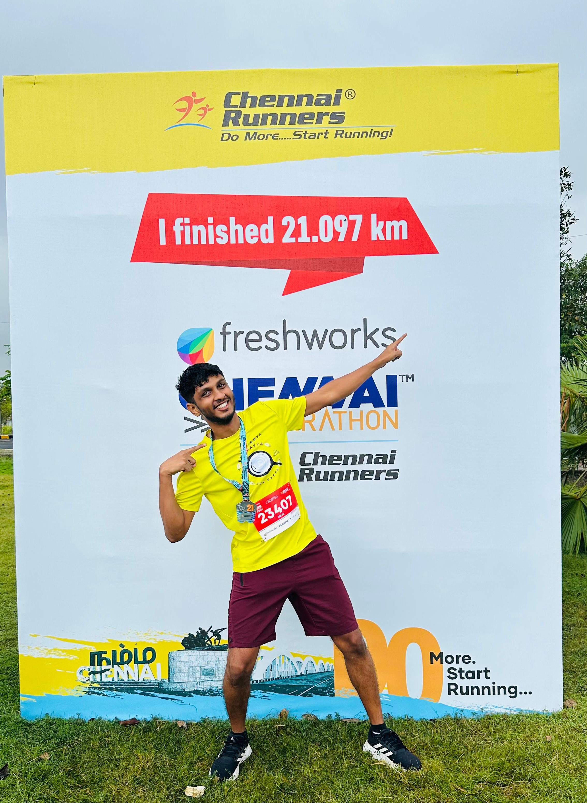

|
Running
I started running in November of 2023, and I have so far covered a distance of 169.1 km. I aim to cover a distance of 40k km by my 40th birthday :) - that’s roughly the Earth’s circumference! And maybe also to complete half and full Iron Man someday, XD
My First Half Marathon
Honestly, I was pretty nervous the day before. In fact, I just wanted to call it quits and was finding reasons to drop at the last minute. Thankfully, I did not, as it turned out to be one of the best experiences. My aim for the marathon was to complete it, that’s all!
The first 15 km was easy peasy. I ran a 15k precisely a week before the HM. But after the 15km mark, every km was a beautiful struggle. I was determined not to walk at any cost except for maybe a few meters before and after every aid station. Oh boy, I just sprinted the last km and did not know I had the energy to do so. But yeah, crossing the finish line, gulping a whole bottle of water, letting your heartbeat settle, and finally, the fact that you completed HM sinks in. It's one of the most excellent feelings!
|

|
{kind=link}